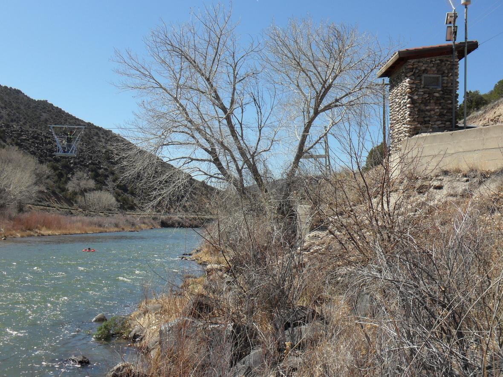

Upper Rio Grande Basin Focus Area Study
Presentations
Home
Real-Time Map
Methods
Deliverables
Presentations
Groundwater Component Update by Natalie Houston, USGS Texas Water Science Center
Upper Rio Grande Basin Focus Area Study and Climate Scenarios for the Basin Study
